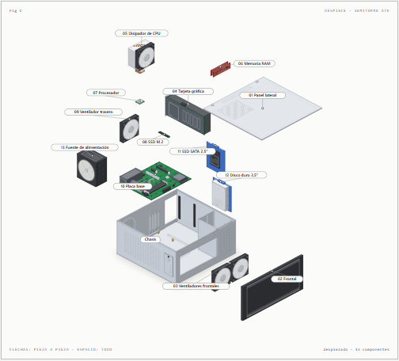
Montaje
Despiece de una semitorre ATX
Los 13 componentes de un sobremesa y el orden en que se desmontan: cada pieza sale por su eje de montaje.
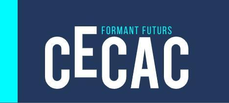
Máquinas dibujadas pieza a pieza para ver por dentro lo que explicamos en clase. Se usan en el navegador: flechas para avanzar, espacio para verlo todo y el ratón para señalar cada pieza. Cada figura tiene tema claro y oscuro.

Los 13 componentes de un sobremesa y el orden en que se desmontan: cada pieza sale por su eje de montaje.
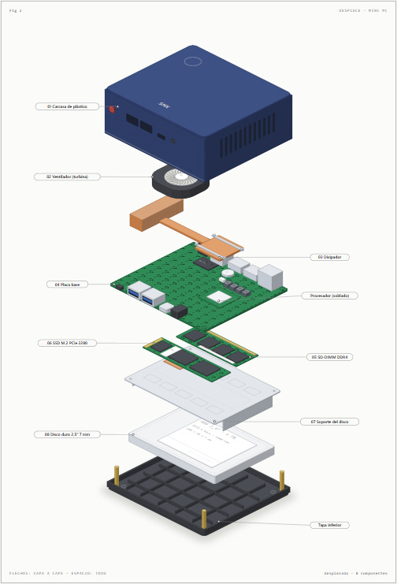
Un ordenador completo en 115 × 102 × 42 mm, capa a capa: turbina, disipador, placa con CPU soldada, SO-DIMM, M.2 y disco de 2,5″.
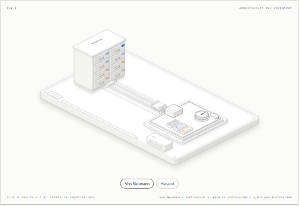
Von Neumann frente a Harvard: un solo bus para instrucciones y datos o dos buses separados.
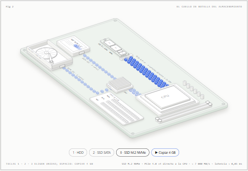
HDD, SSD SATA y NVMe copiando el mismo archivo de 4 GB: dónde se atasca el dato y por qué.
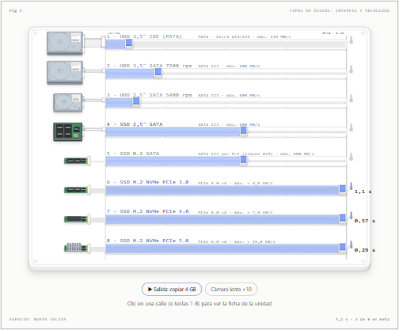
Carrera de 8 unidades, de PATA a NVMe PCIe 5.0, copiando 4 GB a su velocidad real.
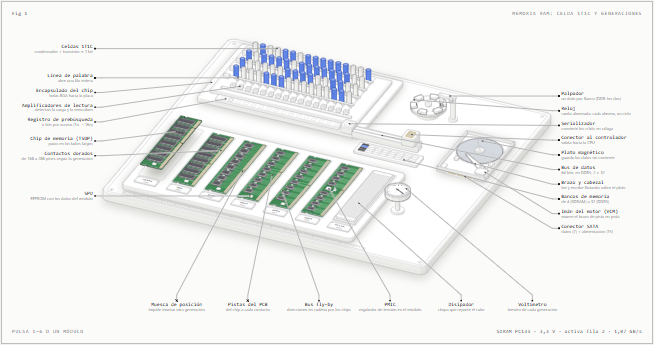
Cómo guarda un bit la DRAM, la prebúsqueda y el reloj DDR, y seis generaciones de módulo.
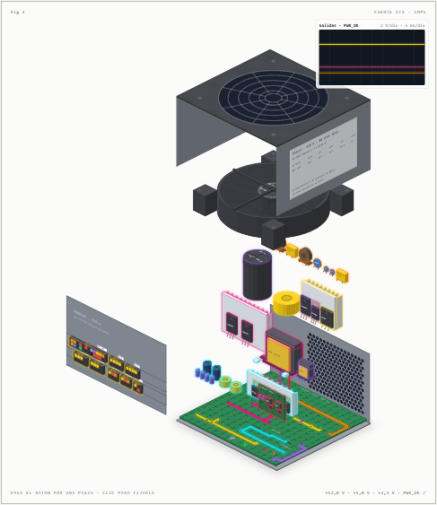
Despiece de una fuente conmutada de 650 W y el ciclo de conversión en 6 fases, de 230 V de alterna a +12, +5 y +3,3 V, con osciloscopio y sonido.
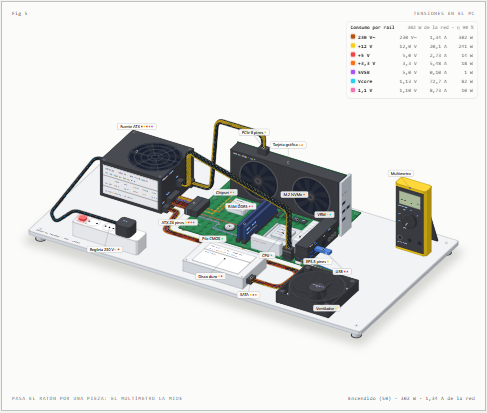
Los raíles de la fuente ATX (+12, +5, +3,3 y +5 VSB) hasta cada componente, el VRM de la CPU y los estados S0, S3 y S5, con electrones en movimiento y sonido.
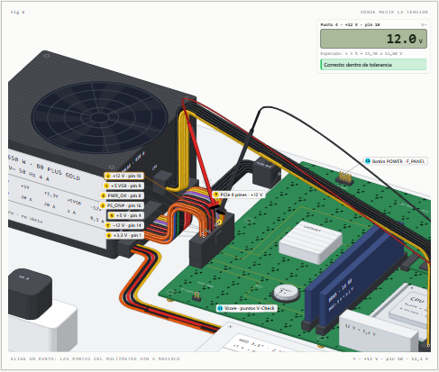
16 puntos de medida con el multímetro de dos puntas: conectores de la fuente, placa y dispositivos, con lectura y veredicto en vivo y averías simuladas.
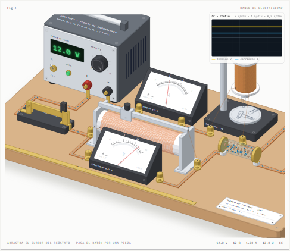
Qué es la electricidad, corriente continua y alterna, magnetismo y ley de Ohm en un banco de pruebas: fuente 0–12 V, reóstato, voltímetro, amperímetro, brújula de Ørsted y electroimán, con osciloscopio y sonido.
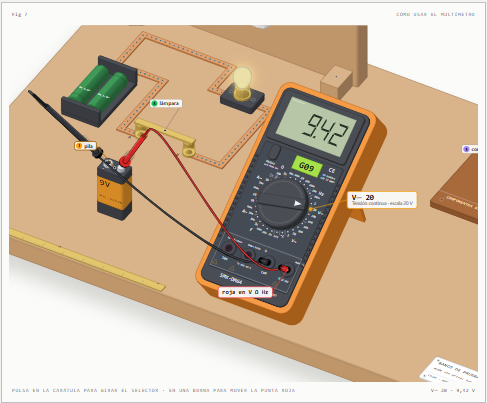
El multímetro del taller con su selector de 32 posiciones y sus 4 bornas: tensión en una pila y un enchufe, resistencia, diodo, continuidad y corriente en serie, con errores simulados como el fusible que se funde.